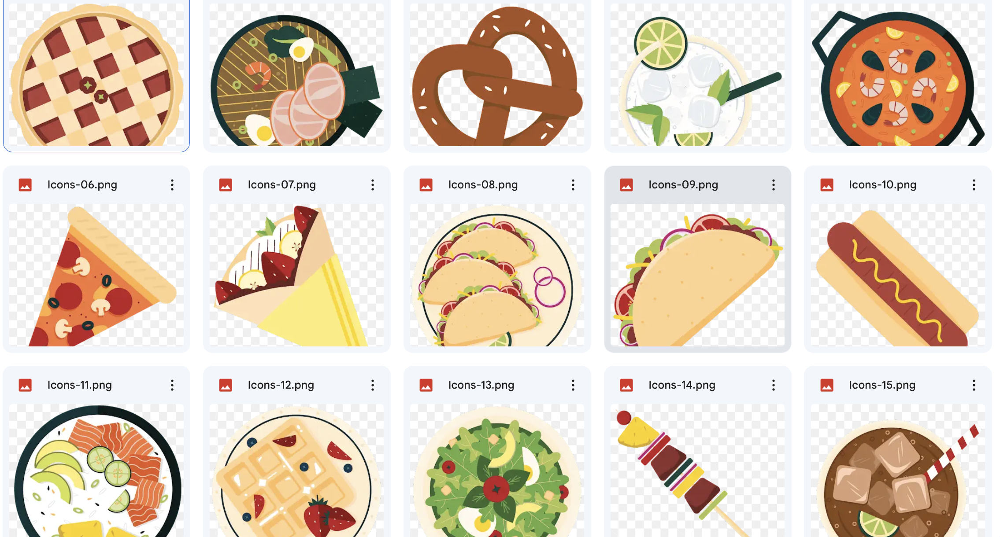

Final Project Proposal: React App Design
Topic
For my final project, I will be coding a food festiva app that will provide a comprehensive and intuitive platform for showcasing a planned event. This site will serve as a mobile element for an entire festival.
Intended Audience
The website will cater to a large audience of food lovers. It aims to attract people of all ages to come to the event!
Design & Style
The website's style will be characterized by a simplistic vector design, enriched with interactive and playful elements.
Color Scheme

The style will match the style of the graphics seen below
Inspiration Websites
Scope
- Home
- Menu
- All American
- Asian
- Mediterranian
- Beverages
- European
- Dessert
- Latin American
Extras
- typography transitions (fade in/out)
- according style home page (work/ about me/contact me)
- General layout for projects (made using components)
- Inverted color option (using if statment)
- Fuctional Contact me box
- Interactive mouse cursor
- Reactive Images